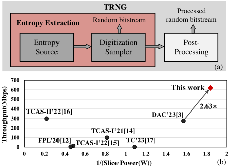
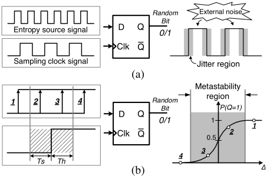
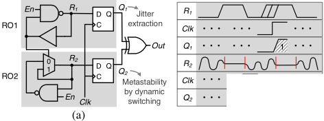
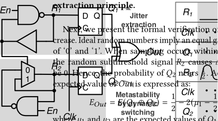
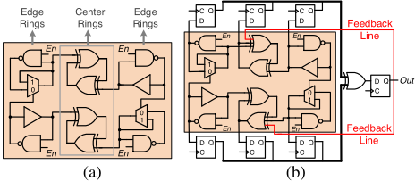
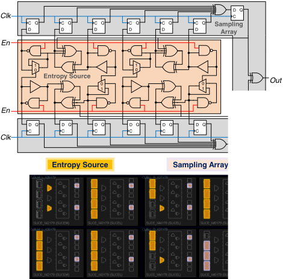
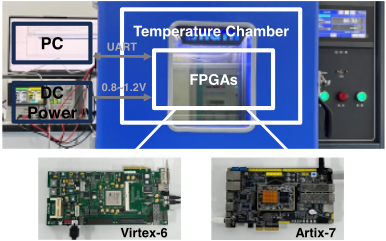
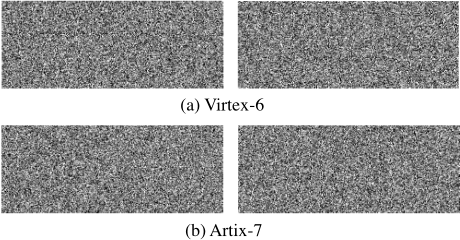
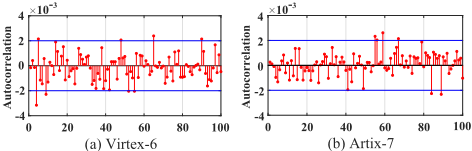
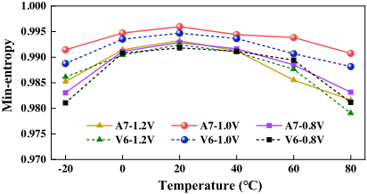

DH-TRNG：一种具备超高吞吐量与面积-能耗效率的动态混合式 TRNG（真随机数发生器）
该论文面向加密系统构建根信任（root of trust）的需求，指出现有 FPGA 兼容数字 TRNG 普遍存在吞吐量低、面积与能耗开销大的瓶颈，此前最优的 Throughput/(Slices·Power) 指标仅为 432.97。方法上提出动态混合熵源单元：RO1 的高频振荡被 DFF 采样以量化抖动，同时 R1 作为 MUX 激活信号驱动 RO2 在保持环与反相环之间随机动态切换，使单一单元同时利用抖动与亚稳态两类熵源并支撑高频采样；再辅以耦合策略（熵源单元反向嵌入 2 级 XOR 环形成嵌套耦合）与反馈策略（输出回注中心环随机化初态）增强随机性，从而免除后处理模块。实现上将门单元按类型约束到紧凑 slice 阵列，仅占 8 slices。实验显示设计在 Virtex-6 与 Artix-7 上分别达到 670Mbps 与 620Mbps 吞吐、0.126W 与 0.068W 功耗，无后处理通过 NIST 与 AIS-31 全部测试，Throughput/(Slices·Power) 达 1139.7、较此前最优提升 2.63 倍，并具备跨工艺 FPGA 可移植性。
现有 FPGA 兼容的数字 TRNG 吞吐量不足、面积与能耗开销高，难以满足机密计算、可信执行环境、区块链数字签名、边缘计算等新兴场景对大量加密数据与高速随机数生成的需求；衡量 TRNG 的关键指标 Throughput/(Slices·Power) 在已有工作中最高仅为 432.97。
提出 DH-TRNG 动态混合 TRNG 架构：(1) 动态混合熵源单元——RO1 产生高频振荡并由 DFF 采样量化抖动，同时 R1 作为 MUX 激活信号使 RO2 在保持环与反相环之间随机动态切换，扩展跃迁时刻并放大亚稳态发生概率，使单一单元同时利用抖动与亚稳态两类熵源并支持高频采样；(2) 耦合策略——两个熵源单元反向插入 2 级 XOR 环构成嵌套耦合结构，使中心环逻辑无序切换、门级信号非周期随机翻转；(3) 反馈策略——最终输出经额外 DFF 回注中心环，随机化初始状态；(4) 面积优化——将各类型门单元约束到紧凑方形 slice 阵列，仅消耗 8 slices，并支持自动布局布线。论文还给出基于 XOR 期望值收敛与随机性覆盖率的随机性提升数学推导。
仅消耗 8 slices（含 23 LUTs、4 MUXs、14 DFFs），在 Xilinx Virtex-6 与 Artix-7 上分别实现 670Mbps 与 620Mbps 吞吐量，功耗分别为 0.126W 与 0.068W
Throughput/(Slices·Power) 达 1139.7，相比此前最优的 432.97 提升 2.63 倍
无需任何后处理即通过 NIST SP 800-22 全部测试项、AIS-31 T0~T8 全部子项，以及 NIST SP 800-90B 测试（IID min-entropy 分别为 0.994698 与 0.995966）
偏差测试中 10 组 1Mbit 数据的统计偏差仅为 0.0075%（Virtex-6）与 0.0069%（Artix-7）；重启测试 6 次采集的 32-bit 首采数据均不相同
在 -20℃~80℃、0.8V~1.2V 的 PVT 变化下 min-entropy 仅轻微下降并保持高位，验证了对 PVT 波动的鲁棒性
与以往单独依赖抖动或亚稳态、或采用多相采样/多级反馈 RO 的 FPGA TRNG 不同，DH-TRNG 在单一动态混合熵源单元内同时开发抖动与亚稳态两类熵源，通过 RO2 在保持环与反相环之间的随机切换扩展跃迁时刻并放大亚稳态概率；再以耦合与反馈两种增强策略在不引入后处理的前提下提升随机性、减少熵源单元数量；配合按类型约束的紧凑 slice 布局实现 8 slices 的极小面积，并给出随机性提升的解析推导（XOR 期望值收敛与随机性覆盖率公式）。
相关度级别：low
命中能力域：无明显对应
理由：论文核心是面向 FPGA 平台的安全原语（TRNG）电路设计，属于硬件安全方向，与团队 7 个能力域（存储/互连 IP 架构、ASIC RTL 设计与实现、STA/物理实现、UVM/覆盖率验证、形式验证、仿真加速、EDA 自动化）均无实质交集：文中所谓 formal verification 是对随机性期望值与覆盖率的数学推导，并非 EDA 形式化 property checking；FPGA 在文中是设计的目标实现平台，而非团队语境下用于 IP 原型验证的载体；论文不涉及 STA、CDC/RDC、UVM、覆盖率或回归自动化。仅'跨工艺 FPGA（45nm/28nm）可移植性'与'PVT 鲁棒性评估'在字面上与团队的跨工艺移植、variation 评估有微弱呼应，但对象与流程均不同，不构成对任何能力域的实质命中。
建议动作：仅了解结论
arXiv:2502.01066v1 [cs.CR] 2025年2月3日
Yuan Zhang 湖南大学 中国长沙 zhangyuanzy@hnu.edu.cn
真随机数生成器（TRNG）作为一种重要的安全原语，是任何加密系统构建信任根的必备组件。然而，现有TRNG存在吞吐量低和面积-能耗高的瓶颈。在本工作中，我们提出了DH-TRNG，一种具有超高吞吐量和面积-能效的动态混合TRNG电路架构。我们的DH-TRNG在不同工艺的FPGA上展现出可移植性，且无需任何后处理即可通过NIST和AIS-31测试。实验表明，该设计仅占用8个slice，在Xilinx Virtex-6和Artix-7上的最高吞吐量分别达到670Mbps和620Mbps。与最先进的TRNG相比，我们提出的设计拥有最高的Throughput Slices · Power，提升了2.63倍。
Kuncai Zhong 湖南大学
中国长沙
kczhong@hnu.edu.cn Jiliang Zhang ∗ 湖南大学 中国长沙 zhangjiliang@hnu.edu.cn

· 硬件 → 集成电路；· 安全与隐私 硬件安全实现。
硬件安全、真随机数发生器（TRNG）、超高吞吐率、面积-能效
Yuan Zhang、Kuncai Zhong 和 Jiliang Zhang。2024。DH-TRNG：一种具有超高吞吐率与面积-能效的动态混合TRNG。载于第61届ACM/IEEE设计自动化会议（DAC '24），2024年6月23日至27日，美国加利福尼亚州旧金山。ACM，美国纽约州纽约市，6页。https: //doi.org/10.1145/3649329.3656236
真随机数发生器（TRNG）作为一种基础的硬件安全原语，是现代信息安全系统中的关键模块 [1]。它提取不可预测的固有物理过程，生成完全无法预见的随机比特流以构建信任根 [2]，这使其在安全性方面优于由固定算法驱
实验结果表明，所提出的真随机数发生器（TRNG）架构总共占用 8 个 slice，包含 23 个查找表（LUT）、4 个多路选择器（MUX）和 14 个 D 触发器（DFF）。在 Virtex-6 和 Artix-7 上，我们提出的设计分别表现出 670Mbps 和 620Mbps 的超高吞吐率，以及 0.126W 和 0.068W 的低功耗。正如
图 1(b) 所示，与最先进的 TRNG 相比，我们的 DH-TRNG 具有最高的 Throughput Slices · Power，实现了 2.63 × 的显著提升。
本节介绍抖动与亚稳态的随机性原理，并阐述相关工作。
抖动是环形振荡器（RO）中由热噪声、散射噪声、电源波动和环境变化等外部随机物理过程诱发的一种典型熵源。它在频域中表现为不确定的相位噪声。通常，在图2(a)所示的抖动提取过程中，低频时钟信号在触发器内对熵源的高频振荡进行采样，以生成随机比特。相位噪声与振荡环阶数之间的关系表示为[5]：
其中，𝐾、𝑇、𝜂、𝑉𝐷𝐷、𝑉、𝐼 和 𝑅 为常数，𝑓0 为环的频率，Δ𝑓 表示偏移频率，𝑃 为功耗，𝑁 为环的阶数。
显然，增大阶数 𝑁 可以放大相位噪声 𝐿𝑚𝑖𝑛。然而，这也会降低频率 𝑓0 和吞吐率[4]。因此，许多相关工作聚焦于权衡方案以提升性能。例如，Cui 等人[4]提出了一种多级反馈 RO，同时提升了 𝑁 和 𝑓0。Lu 等人[3]设计了一种多相采样器真随机数发生器（TRNG）架构，以较低的资源开销提升了吞吐率。然而，其基本熵单元存在固有的随机性不足，这限制了随机序列生成效率的提升。
除抖动之外，亚稳态（metastability）——即触发器的不可预测随机输出——是真随机数生成的另一种理想熵源 Yuan Zhang, Kuncai Zhong, and Jiliang Zhang [6, 7]。如图 2(b) 中的场景 2 和场景 3 所示，当触发器在建立/保持时间内采样到不稳定的中间信号时，会因与亚稳态相关的时序违例而产生不可预测的随机位。

Majzoobi 等人[7]证明了输出最终稳定为'1'的概率可用高斯累积分布函数和中心极限定理进行精确建模，如式(2)所示：
其中，Δ 表示采样边沿与跳变发生时刻之间的时间差，𝜎 与建立/保持时间窗口的宽度成正比。
基于式(2)，通过尽可能确保采样点落在图 2(b) 所示的点 2 与点 3 之间，减小 Δ 可迫使触发器进入亚稳态。受此启发，Peng 等人[8]提出了 RO 驱动的移位寄存器，通过对齐对称输入的延迟来产生不可预测的等概率输出。Sala 等人[9]提出了由多个激励信号配置的锁存 XOR（latched-XOR）单元，以较低的硬件面积实现随机性提升。然而，受限于熵收集速率，两者的吞吐率均受到约束。
本节介绍我们提出的设计。首先，我们介绍所提出的动态混合熵单元。然后，我们提出两种用于增强随机性的强化策略。最后，我们给出整体电路架构与面积优化。
As discussed in Section 2.1, the randomness of ROs is affected by a trade-off between their order and oscillation frequency. To explore the optimal solution, we experimentally analyze the randomness of ROs with different orders. We utilize NIST SP800-90B to test the parallel XORed ROs with a 100MHz sampling frequency. As shown in Table 1, 9-stage ROs yield the highest min-entropy. However, their long transmission delays make them cannot meet the throughput improvement target. In order to satisfy both high-frequency properties and sufficient randomness, we propose a dynamic hybrid entropy unit as shown in Figure 3(a).
| 0 | 1 | 2 | 3 | 4 | 5 | 6 |
|---|---|---|---|---|---|---|
| Stage number | 2 | 3 | 4 | 5 | 6 | 7 |
| Min-entropy | 0.9737 | 0.9733 | 0.9756 | 0.9776 | 0.9783 | 0.9831 |
| Stage number | 8 | 9 | 10 | 11 | 12 | 13 |
| Min-entropy | 0.986 | 0.9871 | 0.9842 | 0.9837 | 0.9788 | 0.9735 |
| 0 | 1 | 2 | 3 | 4 | 5 | 6 |
For the proposed entropy unit, two independent oscillation rings RO1 and RO2 are enabled by signal 𝐸𝑛 to generate high-frequency oscillation signals. Two D flip-flops sample nodes 𝑅 1 and 𝑅 2, producing the final random output through XOR. Due to the influence of external noise, uncertain jitter regions are generated in the transition edge of 𝑅 1, as shown in Figure 3(b). When the clock's positive edge samples this offset signal, the randomness of jitters is quantified, producing an unpredictable output 𝑄 1.
Meanwhile, 𝑅 1 serves as the activation signal for the MUX in RO2, causing RO2 to realize random dynamic switching between a holding loop and an inverter loop. When 𝑅 1=0, 𝑅 2 is in the oscillation region. A high-frequency oscillation signal smoothens the original square wave signal and generates short pulses, which expand the transition moment in the time domain. When 𝑅 1=1, 𝑅 2 is in the holding region, where a rapid transition signal is randomly locked at an uncertain subthreshold state. Thus, the signal collection of 𝑄 2 greatly amplifies the probability of metastability, and the final dynamic hybrid 𝑂𝑢𝑡 exhibits considerable randomness.

Next, we present the formal verification of the randomness in-
crease. Ideal random numbers imply an equal generation probability
of '0' and '1'. When sampling occurs within the holding region,
in Equation (2) to
. According to [10], the
)(
,

are the expected values of
(3)
In the holding region,
2, respectively.
is the definite value 1, and
the expected value is close to
≈
. Thus,
, exhibiting near-ideal randomness.
At the same time, when sampling takes place within the oscillation region, the 𝑛 -order XOR expected value of by Equation (4):
is calculated
𝑛
.
) (
))
(4)
Given that 𝜇 1 , 𝜇 2 ∈ ( 0 , 1 ) implies 1 - 2 𝜇 1 , 1 - 2 𝜇 2 ∈ (- 1 , 1 ) , the expected value will rapidly converge to 1 2 with an increase in the XOR number. Thus, employing more parallel entropy units can eliminate the bias and improve the randomness.
Finally, we show the randomness coverage of the proposed unit, which is a vital metric for evaluating the entropy source. According to [11], the randomness coverage of our proposed dynamic hybrid entropy unit through multi-level XOR is derived as:
其中，𝑛 为 XOR 的数量。𝑎 和 𝑤 𝑖 分别为 RO1 中抖动的概率与宽度。𝑇 𝑟𝑜 𝑖 表示其振荡周期。𝜏 为在 RO2 的保持区对亚阈值信号进行采样的概率。𝜀 和 𝑓 𝑖 分别表示振荡区的转换边沿宽度与振荡频率。
如式 (5) 所示，累积乘法的值被大幅最小化，多个 XOR 的随机覆盖率几乎接近于 1，表明所提出设计的随机性显著提升。基于此，我们还进行了一些实验来展示其优势。如表 2 所示，与 9 级 RO 相比，动态混合熵单元表现出更高的最小熵。因此，我们提出的熵单元成功实现了随机性提升与高频特性二者兼得。
| XOR number | 9 | 10 | 11 | 12 | 13 |
|---|---|---|---|---|---|
| Entropy units | 0.9765 | 0.9803 | 0.983 | 0.9836 | 0.9853 |
| 9-stage ROs | 0.9705 | 0.9751 | 0.9779 | 0.9801 | 0.9813 |
| XOR number | 14 | 15 | 16 | 17 | 18 |
| Entropy units | 0.9868 | 0.9885 | 0.9896 | 0.9903 | 0.9912 |
| 9-stage ROs | 0.9849 | 0.9871 | 0.9873 | 0.9886 | 0.9891 |
| XOR number | 9 | 10 | 11 | 12 | 13 |
3.2
耦合与反馈策略
增加所使用的熵单元数量可以增强随机性，但会导致更高的硬件开销和功耗。为了在提升输出随机性的同时减少熵单元的使用量，我们进一步采用两种强化策略，即耦合策略与反馈策略。

在耦合策略中，两个动态混合熵单元被反向插入两个 2 级 XOR 环中，形成嵌套耦合结构，如图 4(a) 所示。该结构包含两个中心环和四个边缘环。由于 XOR 门的特性，中心环的逻辑随输入而变化。因此，中心环内的信号由两侧带有随机相位噪声的振荡信号激活。此外，在中心环中，时域上还存在由边缘环产生的独立抖动以及不同频率的交叠。这导致中心环的逻辑模式发生无序切换，进而使其中的门级信号在传播过程中表现出非周期性的随机翻转。
在反馈策略中，最终输出被反馈到中心环中以使初始状态随机化，如图 4(b) 所示。对于该策略，多个 D 触发器对由各振荡环产生的独立信号进行采样，采样得到的随机信号由一个 XOR 门汇集以产生最终输出，并引入一个额外的触发器通过反馈线将 𝑂𝑢𝑡 传输到中心环中。这将使振荡信号中的随机相位发生切换。因此，高熵的 𝑂𝑢𝑡 作为激活信号重新使初始状态随机化，从而进一步提升最终输出的随机性。
反馈XOR环的多项式表示为 𝑓 ( 𝑥 ) = 𝑛 𝑖 = 1 𝑥 𝑘 ( 𝑖 ) 𝑖 ，其中 𝑛 和 𝑘 ( 𝑖 ) 分别为XOR门和边缘环的级数。用于实现多环汇聚的中心环的反馈多项式为 𝑓 ( 𝑥 ) = 𝑥 1 1 + 𝑥 2 2 + 𝑥 ′ 𝑟 ，其中 𝑥 1 1 和 𝑥 2 2 表示边缘环的信号，𝑥 ′ 𝑟 为最终随机输出的反馈。因此，耦合与反馈策略实现了随机信号的叠加以及完全随机的初始状态，极大地提升了整个系统的混沌性，并增强了最终输出的随机性质量。
基于前述的熵单元与策略，我们提出了如图5(a)所示的DH-TRNG。在熵源中，所提出的动态混合熵单元被插入中心XOR环，构成两组完全相同的嵌套耦合结构。在多级采样阵列中，由12个环产生的所有独立信号分别通过D触发器进行采样，最终经由XOR树生成随机输出。同时，最终输出被反馈到熵源中XOR环的输入端，以随机化初始状态。整个电路由信号 𝐸𝑛 使能，𝐶𝑙𝑘 由现场可编程门阵列（FPGA）内置的锁相环（PLL）提供。每个时钟周期产生1位真随机数。此外，考虑到如上所述我们的DH-TRNG能够提供充分的随机性支持，它可以在FPGA中实现自动布局布线，无需任何人工干预，也不会造成性能损失。因此，所提出的设计还具有很高的可移植性。

为了减小面积，我们进一步优化了DH-TRNG的实现。作为FPGA的基本可编程单元，Xilinx 6系列或7系列FPGA中的一个slice包含四个六输入查找表（LUT）、三个多路选择器（MUX）、八个D触发器（DFF）以及其他算术逻辑。所有门电路均可通过将LUT配置为相应的逻辑功能来实现。我们将所有门单元按类型约束到紧凑的正方形slice阵列中的合适位置，如图5(b)所示。给定原点slice的坐标，仅占用8个slice，其中熵源结构占用20个LUT和4个MUX，采样阵列占用14个DFF和3个LUT。此外，同一类型门的放置位置和每个slice均可灵活调整。因此，我们所提出的DH-TRNG的面积得到了极大的优化。
我们在两种不同工艺的FPGA上实现了所提出的DH-TRNG，以验证其可移植性，这两种FPGA分别是Xilinx Virtex-6 FPGA（xc6vlx240t，45 nm工艺）和Xilinx Artix-7 FPGA（xc7a100t，28 nm工艺）。为了评估其对温度和电压变化的抵抗能力，我们搭建了如图6所示的实验平台，该平台由一个温箱、一个直流电源、一台计算机和两块FPGA板卡组成。DH-TRNG的性能是通过对采集到的数据进行一系列测试来衡量的，例如NIST测试、AIS-31测试、偏差测试、自相关测试、重启测试和PVT测试。最后，我们将所提出的设计与最先进的基于FPGA的TRNG架构进行了全面比较。

我们对DH-TRNG进行了三种随机性测试。
4.1.1 NIST SP 800-22测试。这是一种被广泛使用的测试套件，用于验证随机序列的随机性，其中P值超过0.01表明序列近似服从均匀分布。Prop.表示测试项的通过概率。我们在标准环境下为每块FPGA采集了30组1Mbit随机数。如表3所示，测试结果表明，我们提出的DH-TRNG通过了所有测试项，表现出良好的随机性。
| NIST SP 800-22.NIST SP 800-22 | Virtex-6.P-value | Virtex-6.Prop. | Artix-7.P-value | Artix-7.Prop. |
|---|---|---|---|---|
| Frequency | 0.739918 | 30/30 | 0.739918 | 30/30 |
| BlockFrequency | 0.100508 | 29/30 | 0.407091 | 29/30 |
| CumulativeSums* | 0.180952 | 30/30 | 0.462665 | 30/30 |
| Runs | 0.468595 | 30/30 | 0.178278 | 29/30 |
| LongestRun | 0.122325 | 30/30 | 0.213309 | 29/30 |
| Rank | 0.350485 | 30/30 | 0.350485 | 30/30 |
| FFT | 0.739918 | 30/30 | 0.468595 | 30/30 |
| NonOverlappingTemplate* | 0.472949 | 30/30 | 0.477819 | 30/30 |
| OverlappingTemplate | 0.671779 | 30/30 | 0.534146 | 30/30 |
| Universal | 0.350485 | 30/30 | 0.299251 | 29/30 |
| ApproximateEntropy | 0.602458 | 30/30 | 0.804337 | 30/30 |
| RandomExcursions* | 0.090867 | 17/17 | 0.029136 | 17/17 |
| RandomExcursionsVariant* | 0.084577 | 17/17 | 0.043234 | 17/17 |
| Serial* | 0.390368 | 30/30 | 0.84476 | 30/30 |
| LinearComplexity | 0.178278 | 29/30 | 0.407091 | 30/30 |
| NIST SP 800-22.NIST SP 800-22 | Virtex-6.P-value | Virtex-6.Prop. | Artix-7.P-value | Artix-7.Prop. |
4.1.2 NIST SP 800-90B测试。该测试侧重于对数字序列进行原假设检验，并采用一种独特的方法来估计随机序列的统计分布和最小熵（min-entropy）。我们在标准环境下为每块FPGA采集了30组1Mbit随机数。NIST SP 800-90B非独立同分布（nonIID）测试结果如表4所示，独立同分布（IID）测试的最小熵分别为0.994698（Virtex-6）和0.995966（Atrix-7），证明了其卓越的随机性。
| NIST SP 800-90B.NIST SP 800-90B | Virtex-6.p-max | Virtex-6.h-min |
|---|---|---|
| MCV | 0.501841 | 0.994698 |
| Collision | 0.527344 | 0.923184 |
| Markov | 4.28e-39 | 0.995748 |
| Compression | 0.5 | 1 |
| t-Tuple | 0.51939 | 0.945111 |
| LRS | 0.519355 | 0.945206 |
| Multi-MCW | 0.501042 | 0.998657 |
| Lag | 0.500465 | 0.998567 |
| Multi-MMC | 0.50063 | 0.998183 |
| LZ78Y | 0.501705 | 0.99509 |
| NIST SP 800-90B.NIST SP 800-90B | Virtex-6.p-max | Virtex-6.h-min |
Aritx-7
p-max h-min
0.501400
0.995966
0.521484
0.939304
3.64E-39
0.997594
0.529343
0.917726
0.502963
0.991475
0.501141
0.996713
0.501683
0.995153
0.500566
0.998368
0.501028
0.997038
4.1.3 AIS-31测试。AIS-31是另一种用于评估随机数质量的测试套件。该测试由从T0到T8的九个子测试项组成。我们为每块FPGA采集了7,200,000位随机数。如表5所示，AIS-31的测试结果表明，我们的DH-TRNG所生成的随机序列通过了所有测试项。
| AIS-31 | Virtex-6 | Artix-7 |
|---|---|---|
| Disjointness Test (T0) | Pass | Pass |
| Monobit Tests (T1)* | 100% | 100% |
| Poker Tests (T2)* | 100% | 100% |
| Run Tests (T3)* | 100% | 100% |
| Long Run Test (T4)* | 100% | 100% |
| Autocorrelation Test (T5)* | 100% | 100% |
| Uniform Distribution Test (T6) | Pass | Pass |
| Multinomial Distributions (T7) | Pass | Pass |
| Entropy Test (T8) | Pass | Pass |
| AIS-31 | Virtex-6 | Artix-7 |
在重启测试中，我们在相同条件下使能所提出的DH-TRNG，并对前32位随机数据进行六次采样。获得的数据分别为0X8E8F7BE6、0XD448223A、0X2ED82918、0X79DA4E4B、0X51A602A9和0XDB9E49EC。结果表明所有组序列均不相同，这证明了我们的TRNG具有不可重复性，并具备真随机特性。
在理想条件下，TRNG 生成 0 和 1 的概率应当相等。序列的偏差程度不仅会影响其随机性，还会使 TRNG 变得脆弱。我们使用以下公式来量化随机数的偏差程度：
分别表示 1 和 0 的个数。为了评估我们所提出的 TRNG，我们对生成的 10 组 1 Mbit 随机数据进行了统计分析。各 FPGA 的统计偏差分别为 0.0075%（Virtex-6）和 0.0069%（Artix-7）。此外，我们将随机序列绘制成比特流图像，如图 7 所示，其中 '1' 在左图中以黑色像素表示，在右图中以白色像素表示。黑色像素与白色像素的均匀分布证明了我们所提出的 TRNG 生成的随机数是均匀且无偏的。

图 7：比特流图像。
自相关测试使用自相关函数（ACF）来测试 TRNG 能否产生相互独立的随机数。根据 Karl Pearson 的统计标准，相关系数低于 0.3 表明随机序列之间不相关。我们将滞后系数设置为 1 到 100，并计算 1Mbit 随机序列的自相关性。如图 8 所示，测试结果表明自相关性很低，证明我们的 DH-TRNG 能够抵抗相关分析攻击。

所提出的 DH-TRNG 在不同工艺的 FPGA 上，于 -20℃ ∼ 80℃ 的温度范围和 0.8V ∼ 1.2V 的电压范围内进行了评估。在每组实验中，我们采集 100 条各 1Mbit 的不同序列用于 NIST SP800-90B 测试，并计算最小熵（min-entropy）。如图 9 所示，所提出的 TRNG 在 20℃ 和 1.0V 下具有最大的最小熵。此外，当温度和电压发生变化时，最小熵虽呈现轻微下降，但始终保持较高水平，证明我们的 DH-TRNG 对 PVT 波动同样具有足够的鲁棒性。

为了进行公平而全面的评估，我们在 Xilinx Artix-7 FPGA 上从吞吐量、面积和功耗三个方面将所提出的设计与最先进的 TRNG 进行了比较。如表 6 所示，文献 [12, 13, 15, 17] 功耗较低，但吞吐量欠佳。文献 [3, 14, 16] 的吞吐量有所提升，其中 [3] 的 Throughput Slices · Power 达到 432.97。然而，这些设计通常需要较大的面积，且吞吐量仍有待进一步提升。与它们不同，我们提出的熵单元（entropy units）及所采用的强化策略以最小的硬件面积充分挖掘随机性，从而满足高频采样的需求。这使得我们的 DH-TRNG 脱颖而出，实现了 620Mbps 的最高吞吐量，同时仅占用 8 个 slice，总功耗仅为 0.068W。与现有工作相比，DH-TRNG 在吞吐量方面展现出绝对优势，并取得了最高的 Throughput Slices · Power，达 1139.7。因此，它同时实现了超高吞吐量与面积-能效。
| Design | LUTs | DFFs | Slices | Throughput (Mbps) | Power* (W) | Throughput Slices · Power |
|---|---|---|---|---|---|---|
| FPL'20 [12] | 40 | 29 | 10 | 1.91 | 0.043 | 4.44 |
| TCASII'21 [13] | 4 | 3 | 1 | 0.76 | 0.025 | 30.4 |
| TCASI'21 [14] | 56 | 19 | 18 | 100 | 0.068 | 81.7 |
| TCASI'22 [15] | 32 | 55 | 33 | 12.5 | 0.063 | 6.01 |
| TCASII'22 [16] | 38 | 121 | 38 | 300 | 0.119 | 66.34 |
| TC'23 [17] | 152 | 16 | 40 | 1.25 | 0.023 | 1.36 |
| DAC'23 [3] | 24 | 33 | 13 | 275.8 | 0.049 | 432.97 |
| This work | 23 | 14 | 8 | 620 | 0.068 | 1139.7 |
| Design | LUTs | DFFs | Slices | Throughput (Mbps) | Power* (W) | Throughput Slices · Power |
This paper presents a dynamic hybrid TRNG with ultra-high throughput and area-energy efficiency. The proposed dynamic hybrid entropy unit sufficiently exploits both jitters and metastability to enhance randomness for high-frequency sampling. The entropy is further bolstered by the introduced coupling and feedback strategies, enabling the DH-TRNG to pass both NIST and AIS-31 tests incurring only 8 slices without any post-processing. Moreover, our design is portable across different process FPGAs and supports fully automated placement and routing. Compared with state-of-the-art TRNGs, the proposed DH-TRNG achieves the highest throughput and Throughput Slices · Power .